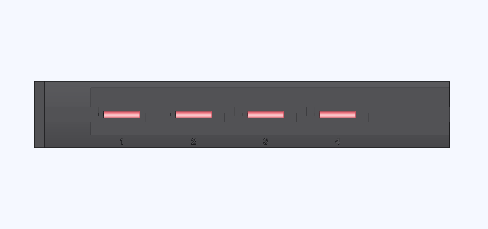

Wire the reed comb
Use the reeds you plan to install in the machine. Give each reed its own signal wire and join the opposite leads to one common return.

- Seat each glass body against the end of its pocket nearest the tab.
- Grip the lead with pliers between the glass and the bend. Bend the lead nearest the tab through its slit into the wide groove. Solder on a thin signal wire labeled with the station number.
- Support the other lead the same way. Bend it into the narrow groove and solder it to the common return. Trim the leads inside their grooves and route every wire out the end opposite the tab.
Check clearance and continuity
Keep glass, wire and solder below the flat surface that supports the tube. Check continuity between each signal and the return as you pass the float's magnet over the reed. The contact should close and reopen.